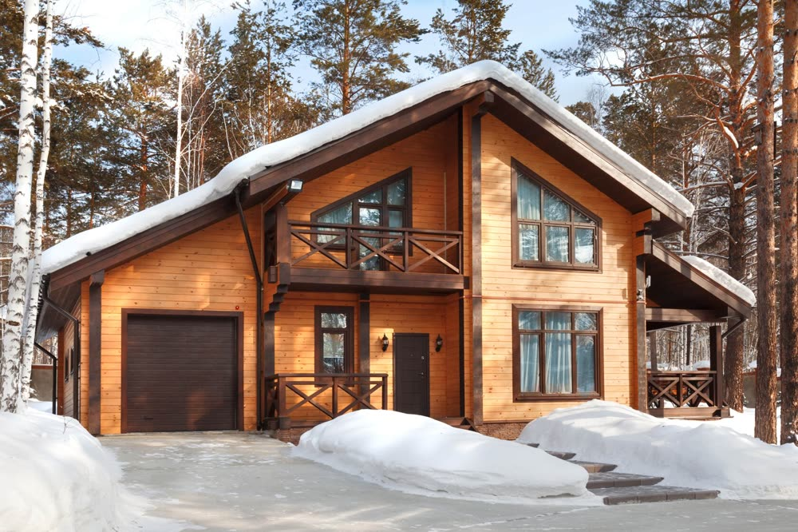
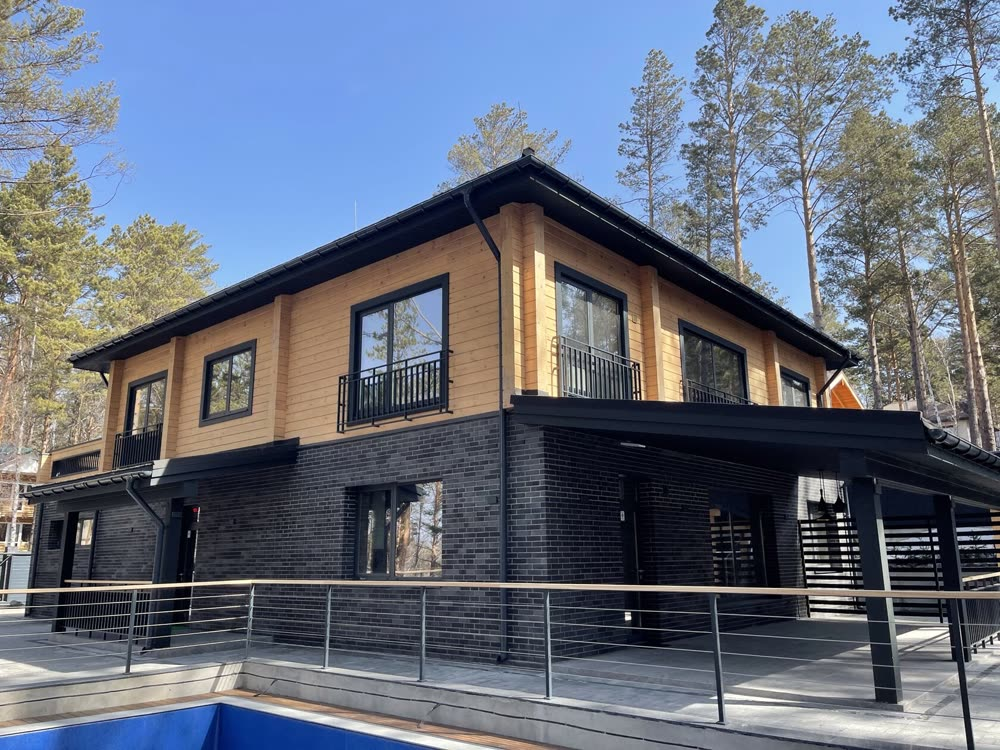
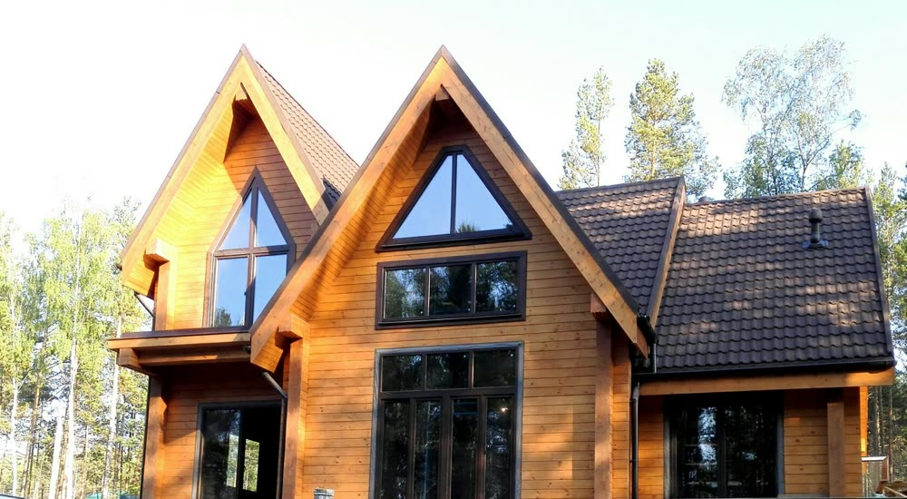
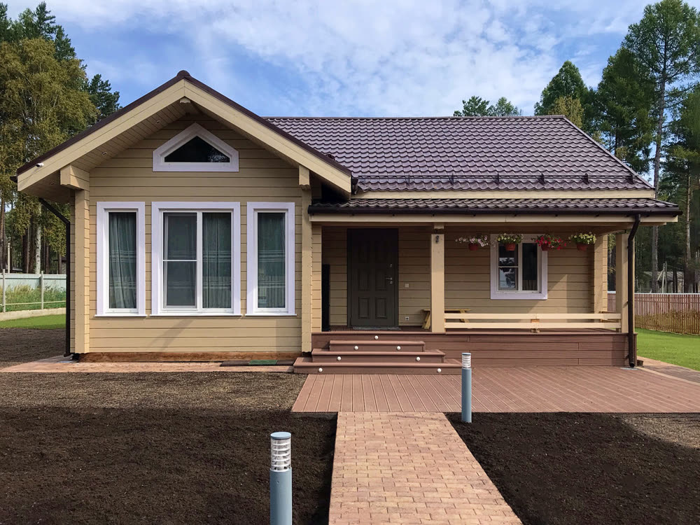
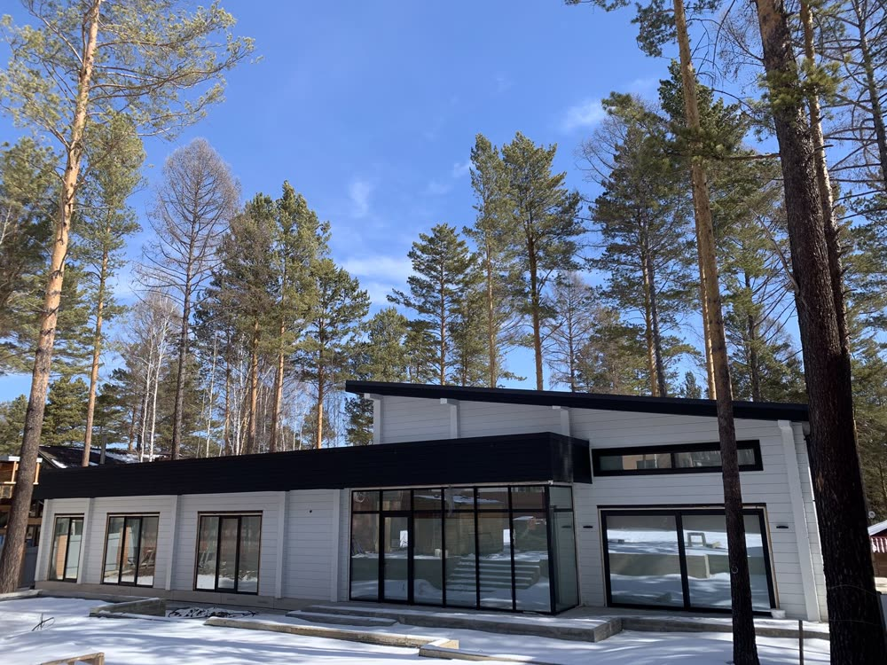
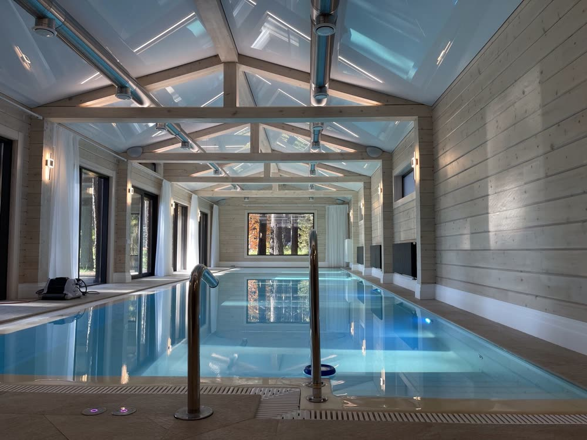

Подорожание материалов на рынке цену не меняет. Срок называем честный. А сколько зарабатываем на вашем доме — говорим открыто. Исключение — если вы сами меняете проект или задание.
На фото — пристрой из клеёного бруса Root House, Иркутск, 2021.
Фото настоящих объектов из портфолио компании.






Цитаты взяты дословно из обсуждений в Т—Ж и на Пикабу. Ответы — из договора и правил компании.
Цены на материалы выросли и теперь нам нужно дополнительно еще почти 200 тысяч рублейслова подрядчика в пересказе заказчика · Пикабу, 2021
Цена фиксируется после подписания договора и внесения предоплаты. Подорожание материалов её не меняет.
Меняется, только если вы сами меняете проект или задание.…начинает кормить завтраками, уходить от прямых вопросов. … Не встречается, увиливает, не берет трубку.руководитель группы пострадавших заказчиков ИЖС · Т—Ж, 2026
График работ фиксируем в договоре. У каждого дома общий чат: вы, менеджер проекта, архитектор и директор компании. Фото и видео с площадки — там же.
…говорят, есть дома, которые построенные без косяков, но никто их не виделчитатель Т—Ж, 2022
Приезжайте и посмотрите. В нашем посёлке на 19-м км Байкальского тракта стоят дома на продажу — их можно смотреть без хозяев.
…аванс и выкинув симку - типичная модель бизнеса многих в строительном бизнесе сегодня.комментарий на Пикабу, 2025
Компания работает с 2011 года, два офиса — в Иркутске и Москве. Гарантия на строительство — 5 лет, и она записана в договоре.
Я открыто прямо всегда говорю, маржинальность нашей компании 30%. … Я в эти деньги умудряюсь взять на себя ответственность, организовать эту работу, заплатить зарплату всем работникам, бухгалтерию, налоги заплатить. … И при этом нести гарантию. Сергей Корнев, генеральный директор Root House, подкаст «Строители об этом молчат»
Когда строитель обещает «дом за полтора месяца», он говорит о коробке. До переезда этапов больше — называем их сразу.
Так говорит Сергей Корнев: «это вообще идеальная ситуация, на самом деле, если говорить про дом полностью».
Пример из практики: дом 93 м² в Аршане для многодетной семьи после наводнения. Работы на готовом фундаменте начались в марте, ключи передали 29 мая 2020 года.
Смотреть, как Сергей объясняет сроки, 23:02 →На 19-м км Байкальского тракта мы строим дома на продажу. Они никому не принадлежат — заходите и смотрите. Готовый дом «под отделку» с участком там стоит 15,9 млн ₽.
Цена — с сайта компании, уточняйте актуальнуюДадим пять номеров на выбор. Заранее предупредим людей, что вы позвоните, — разговаривайте сами.
Из подкаста, 25:13Мы сами это советуем — даже если вы строите с нами. Он проверит смету и будет приезжать на каждый этап.
Из подкаста, 18:57Архитектура, конструктив, стройка, инженерия и отделка — в одной штатной команде. Отвечает за всё одна компания, а не пять бригад.
«Прораб контролировал каждый этап, материалы использовали самые качественные. Получилось даже лучше, чем ожидал!»
Яндекс Карты · 16.07.2025«Если вы хотите построить дом без хлопот, то это ваша компания.»
Яндекс Карты · 21.12.2025«Ответственная компания! Выполняют всё в срок, очень отзывчивые люди в компании.»
Яндекс Карты · 07.05.2024Это тоже слова Сергея Корнева. Дальше он говорит: «С точки зрения получения того, что ты хочешь, лучше построить. Ты никогда не купишь то, что тебя устроит на 100%». Поэтому у нас есть оба пути.
Дом в нашем посёлке на Байкальском тракте: приезжаете, смотрите, покупаете.
Проект под ваш участок и семью, цена в договоре, гарантия 5 лет.
Расскажите, какой дом хотите, и получите ориентир по стоимости и консультацию архитектора.